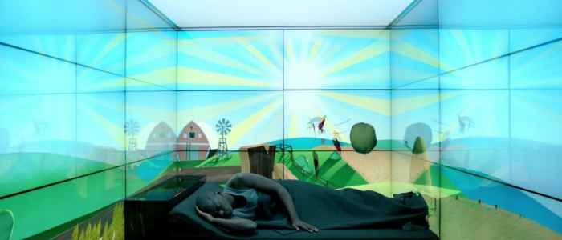
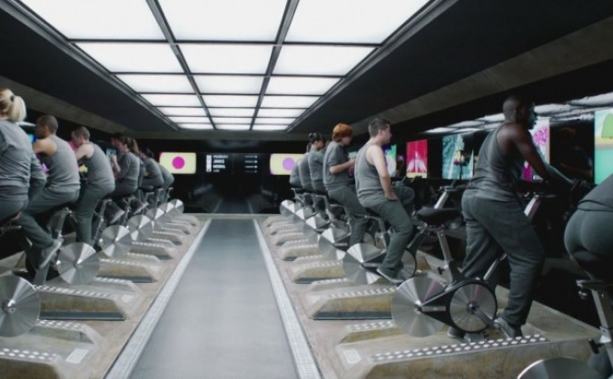
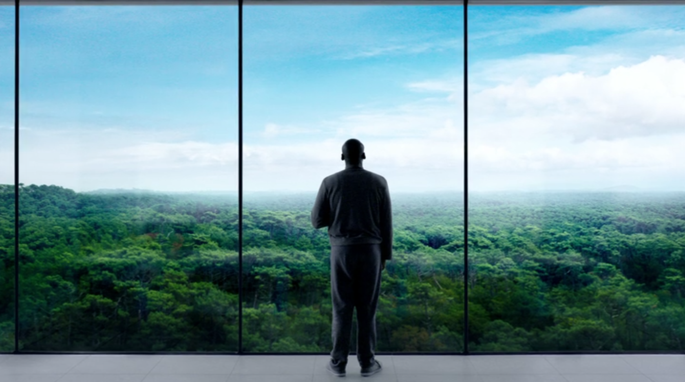

Fifteen Million Merits
The work day begins

A man by the name of Bingham—‘Bing’—Madsen is awoken by the crow of a cartoon rooster sitting on the fence of a cartoon farm. Bing’s bedroom is a four-walled cell with floor to ceiling screens. As he goes about
his daily routine, we become aware of the lack of any windows or doors to the outside world. The space is monochromatic and the air is stale.

The workers need to ride stationary bikes to earn ‘merits’ (a form of currency) and to power the sterile establishment in which they live. While working, Bing opts to watch ‘Rolling roads’ which cartoonishly simulates the experience of biking down an
endless road as trees and grass roll by—reminiscent of the aesthetics of a Wii Sports game. Technically, this appears to be the most real way that any inhabitant of this space can experience nature. The workers continue to work, without
questioning why or how their society arrived to this point. They reluctantly continue their strange daily physical drudgery, seemingly without any inclination to speak out against it. Their environment is completely devoid of any plants
or animals, apart from green vending-machine apples, which were ‘probably grown in a petri dish’.
Bing eventually is promoted from his job as a stationary biker, earning his own time slot on a TV show. But despite attaining
the fame that he and the worker drones held up as an escape from their servitude, Bing seems to have reverted to going through the motions, albeit in a more luxurious habitat which overlooks a peaceful forest. But it is unclear whether they
are indeed real windows or just more screens. The latter is more disquieting… and far more likely . One can morbidly imagine that with society’s prioritization of work, the real natural environment withered and died away, becoming uninhabitable
and fully confining people indoors.

This synopsis originates from Black Mirror’s episode entitled ‘Fifteen Million Merits’. It serves as an example of one of many dystopian scenarios to illustrate a potential fate of humanity’s current work-life situation. It could
be the outcome of our neglect for the planet if we take into account the general prioritization of work and health over everything else.